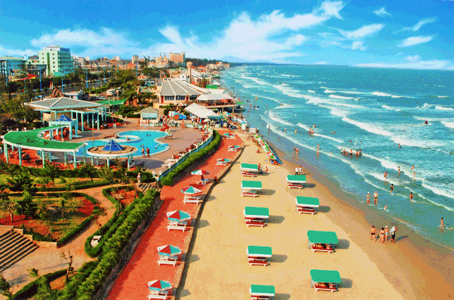
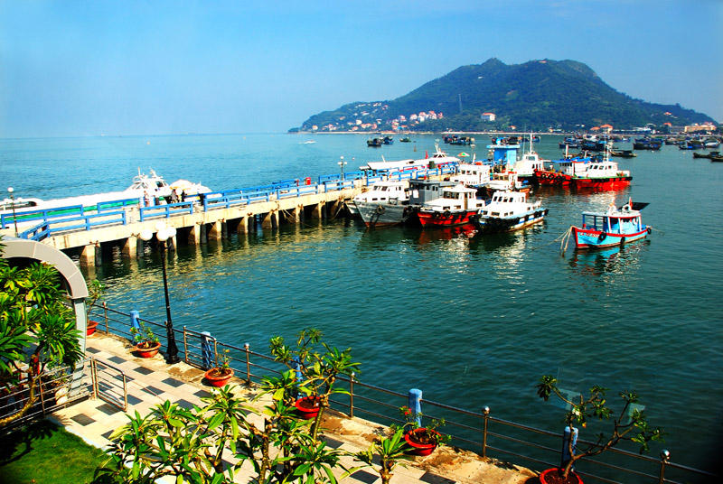
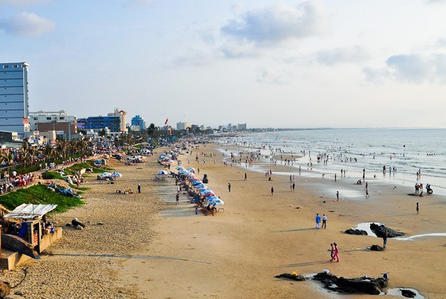
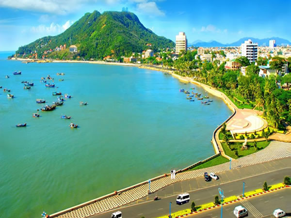
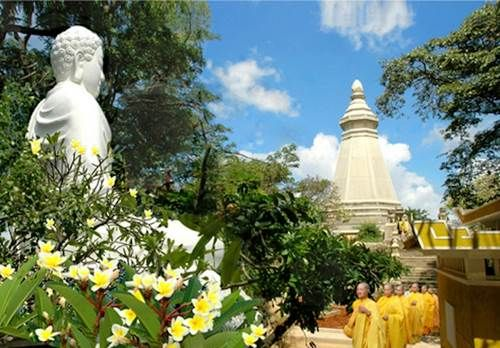
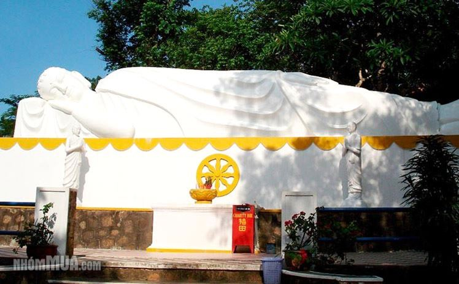
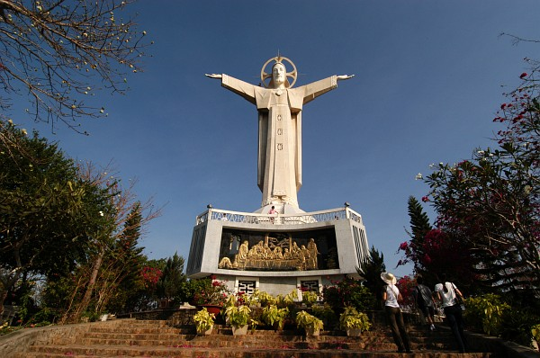
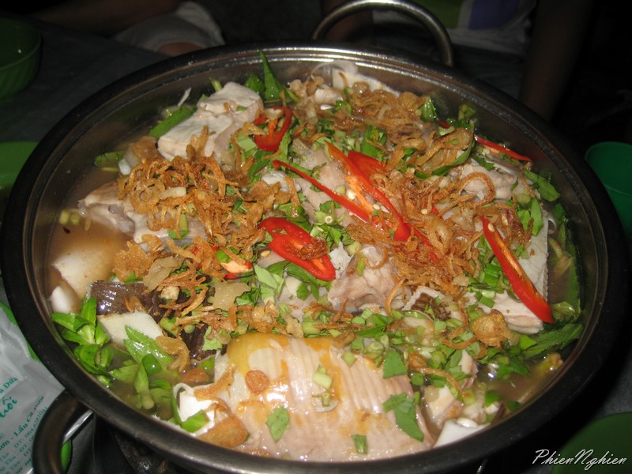
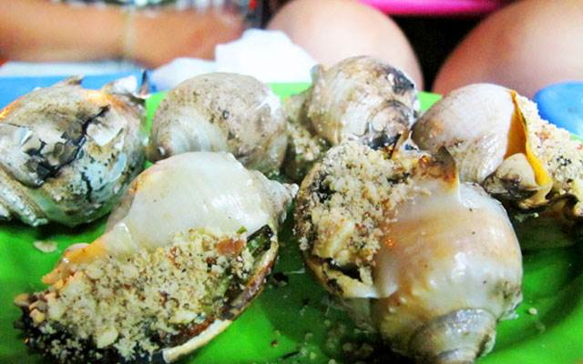
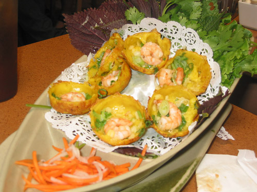

Vũng Tàu có 20km bờ biển với nhiều dáng vẻ, những bãi cát phẳng phiu mịn màng, những bờ đá dựng đứng và
những hàng cây xanh tốt quanh năm, tiếp liền với vịnh, biển hình cánh cung, mặt nước khá phẳng lặng, tạo
nên những bãi tắm nổi tiếng.
Vũng Tàu trở thành đô thị loại I năm 2013, là một thành phố đáng tới, đáng sống và hạnh phúc.
THỜI ĐIỂM DU LỊCH VŨNG TÀU

Ở Vũng Tàu quanh năm là mùa du lịch vì nhiệt độ không khi nào quá lạnh hay quá nóng. Bạn chỉ cần theo dõi
bản tin dự báo thời tiết để tránh du lịch Vũng Tàu khi có mưa bão.
Ngoài ra, vào ngày cuối tuần và các dịp Lễ tết, Vũng Tàu thu hút rất đông khách du lịch, giá cả các dịch
vụ đều tăng cao.
Để có kỳ nghỉ Vũng Tàu tuyệt vời nhất, tốt hơn bạn nên tránh những khoảng thời gian đó.
ĐIỂM DU LỊCH HẤP DẪN
Vũng Tàu luôn là điểm du lịch hấp dẫn bởi vẻ đẹp phong cảnh tự nhiên của mình. Bất cứ nơi nào trong
chuyến du lịch Vũng Tàu cũng có sức cuốn hút kỳ lạ.
NHỮNG ĐIỂM DU LỊCH HẤP DẪN TRONG THÀNH PHỐ
Bãi Sau
Bãi Sau: nằm ở phía Đông Nam thành phố Vũng Tàu, dài khoảng 8 km có tên khác là bãi “Thùy Vân”. Đây
là bãi biển dài và thơ mộng, với nét đẹp dịu dàng của một vùng biển quanh năm đầy nắng ấm.
Đại lộ Thùy Vân chạy dọc theo Bãi Sau, một bên là những dãy phố sầm uất, cao ốc khách sạn hiện đại,
đầy đủ tiện nghi, một bên là bãi cát vàng và biển xanh êm ả, thơ mộng, thu hút đông đảo khách du
lịch trong và ngoài nước đến tắm biển, tham quan và nghỉ dưỡng.

Bãi Trước
Bãi Trước: Nằm về hướng Tây Nam, Bãi Trước Vũng Tàu còn có tên khác là bãi “Tầm Dương”, giống như nửa
vầng trăng tựa lưng vào đất liền, hai đầu là hai ngọn núi Tương Kỳ và Tao Phùng. Thiên nhiên sơn
thủy hữu tình đã tạo cho bãi Trước cảnh đẹp thơ mộng, là bến đậu của những con tàu trở về sau những
chuyến hải trình dài.
Dọc Bãi Trước là những hàng cây dừa, cây bàng sum suê tỏa bóng mát, bên dưới là khu công viên dành
cho khách bộ hành. Nhiều tòa nhà quan trọng quanh khu vực Bãi Trước càng tô điểm cho nó nét đẹp hiện
đại.

Thích ca Phật đài
Thích ca Phật đài: Nằm trên đường Trần Phú, con đường vòng quanh ôm Núi Lớn, lên Bến Đá và Bến Đình.
Danh thắng Thích Ca Phật Đài gắn liền với vẻ đẹp của Bến Đá và cảnh quan thiên nhiên hướng Đông bắc
Núi Lớn. Nếu Bến Đá là cảng cá sầm uất, nhộn nhịp thì Thích Ca Phật Đài là nơi tịch liêu, đượm vẻ
huyền diệu của chốn thiên thai.

Tịnh Xá Niết Bàn
Tịnh Xá Niết Bàn: Niết Bàn Tịnh Xá nằm ở trung tâm Bãi Dứa, toạ lạc trên triền núi, hướng mặt ra
biển. Ở vào vị trí nên thơ đó, Niết Bàn Tịnh Xá có sức hấp dẫn lớn đối với du khách. Di tích này
được khởi công xây dựng năm 1969, đến năm 1974 mới hoàn thành. Đây là một công trình đồ sộ gồm nhiều
phân, nhiều cấp, toạ lạc trên diện tích gần 10.000m2. Lối lên rộng rãi, dọc theo triền dốc.

Tượng chúa Ki tô
Tượng chúa Ki tô: Trong các điểm du lịch Vũng Tàu, Tượng Chúa Kitô không chỉ là một công trình góp
phần làm bức tranh du lịch Vũng Tàu thêm màu sắc, mà còn mang ý nghĩa rất lớn về tôn giáo. Có tên
gọi khác Tượng Đức Chúa dang tay hay Tượng Chúa Kitô trên núi Tao Phùng, Tượng Chúa Kitô Vũng Tàu
được xem là bức tượng lớn nhất Châu Á.

THƯỞNG THỨC ĐẶC SẢN VŨNG TÀU
LẨU CÁ ĐUỐI
Lẩu cá đuối từ lâu được coi là món đặc sản nổi trội, đại diện cho ẩm thực vùng biển Vũng Tàu. Tất
nhiên, không tự nhiên mà cá đuối được yêu thích mà vì nó ngon và lạ một cách rất “diệu kỳ”. Không
như những loại cá nấu lẩu khác, cá đuối dường như hoàn toàn không có xương hoặc chỉ có xương rất ít
ở đầu và sống lưng (đối với những con to).

ỐC
Từ những loại ốc dễ tìm ở xứ biển như ốc mỡ, ốc nhảy, ốc bươu, ốc hương… dưới bàn tay chế biến khéo
léo của các đầu bếp trở thành những món đặc sản miền biển để lại hương vị khó quên cho thực khách.

BÁNH KHỌT
So với nhiều món ăn cầu kỳ khác, bánh khọt là món ăn dân dã nhưng mang một hương vị rất riêng của
Vũng Tàu. Màu trắng của bột gạo quyện với vị béo ngậy của mỡ hành và độ ngọt của tôm tươi, vị thơm
của tôm khô chà nhuyễn trong món bánh khọt.
